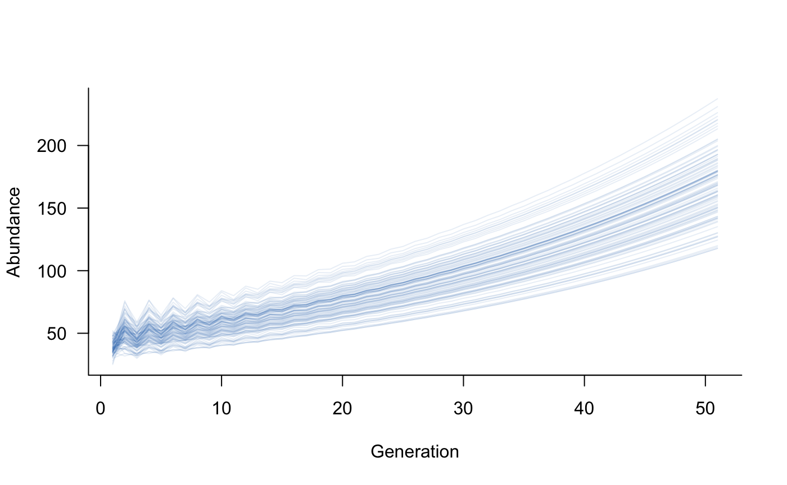
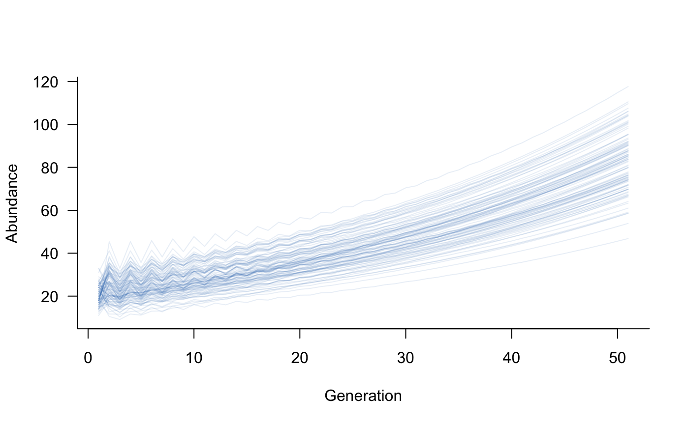
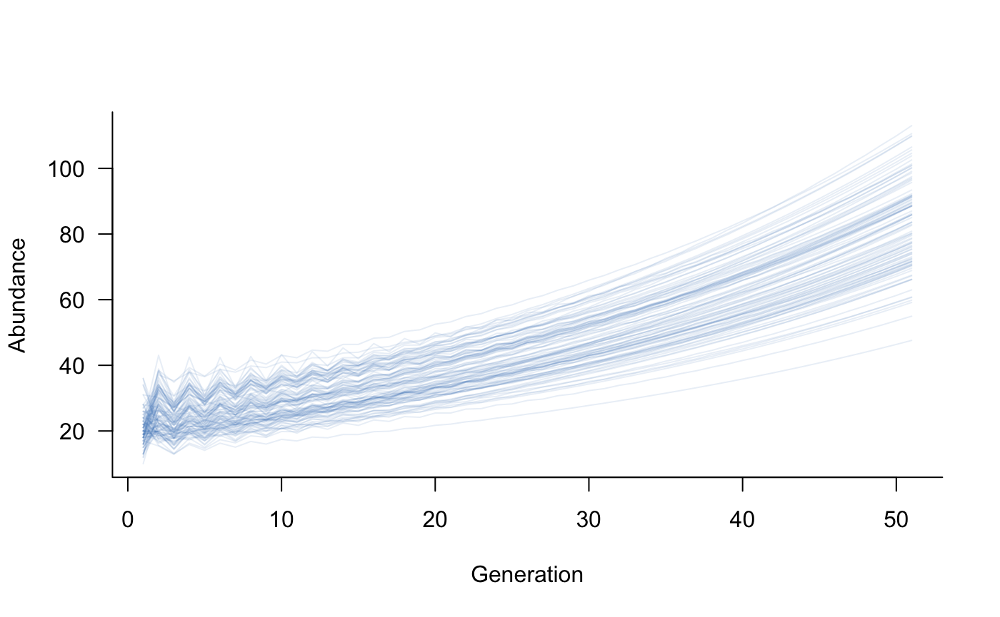
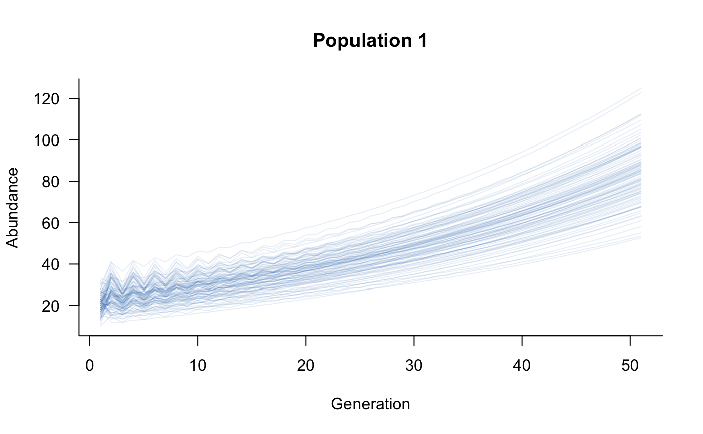
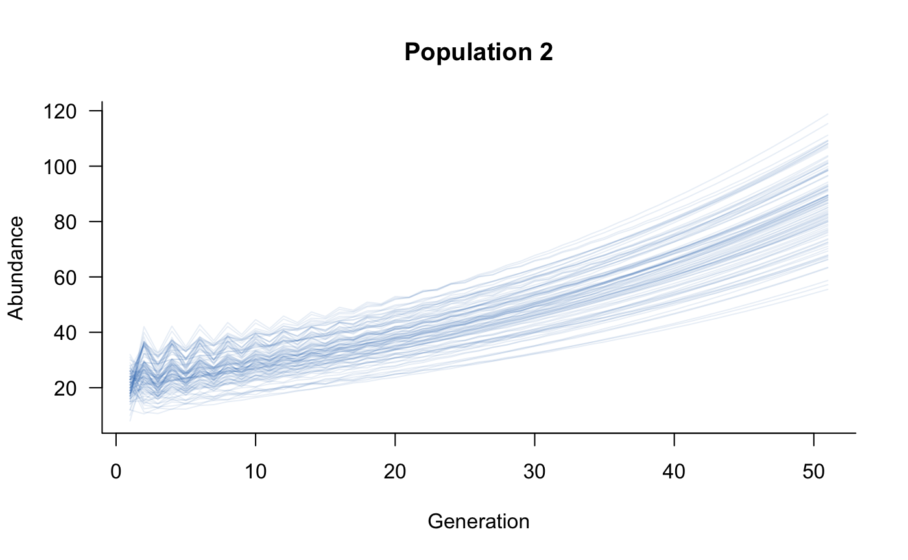

vignettes/metapopulations.Rmd
metapopulations.Rmdaae.pop has a built-in method to define a metapopulation from multiple populations. This is based on the most-general definition of a metapopulation: populations of the same species connected by dispersal. Defining a metapopulation requires dynamics objects for multiple populations, a structure that defines movements between populations, and a dispersal object, which is a new class of object used to specify in detail the movements between populations.
This vignette introduces structure and dispersal objects and explains how population processes (e.g., demograhic stochasticity) are handled in metapopulations.
Simulating metapopulation dynamics is very similar to the basic simulate approach outlined in the Getting started vignette. The only difference is that the population matrix has to be expanded to include multiple populations and movements among these populations. This section will start with a highly simplified example of a building a metapopulation from scratch and will then introduce some methods in aae.pop to streamline this process for more realistic population models.
First, define a simplistic two-class model:
popmat_simple <- matrix( c( 0, 2, # reproduction of 10 new individuals per adult (female) 0.45, 0.15 # move from class 1 to class 2 with 0.8 probability, # survive in class 2 with 0.25 probability ), nrow = 2, byrow = TRUE )
If we assume there are two separate populations with same underlying vital rates (defined in popmat_simple), it is possible to build up a four-class model that has two classes from population 1 and another two classes from population 2:
# setup a matrix with four classes and all elements equal to zero metapop_simple <- matrix(0, nrow = 4, ncol = 4) # fill the first population's vital rates # (top two rows, two left-hand columns) metapop_simple[1:2, 1:2] <- popmat_simple # repeat for the second population, this time # filling the bottom right square metapop_simple[3:4, 3:4] <- popmat_simple
This matrix defines transitions between all four classes (two classes each in two populations), but currently keeps transitions within populations. Following the columns move to rows rule of aae.pop, the metapop_simple matrix defines transitions from class 1 to class 2, class 2 to classes 1 and 2, class 3 to class 4, and class 4 to classes 3 and 4:
## [,1] [,2] [,3] [,4]
## [1,] 0.00 2.00 0.00 0.00
## [2,] 0.45 0.15 0.00 0.00
## [3,] 0.00 0.00 0.00 2.00
## [4,] 0.00 0.00 0.45 0.15Adding dispersal, or movement between the two populations, requires transitions from class 1 or 2 to class 3 or 4, and vice versa. For example, dispersal might be a feature of the second class only (adults), in which case individuals would move between class 2 and class 4. These movements will be defined by cells [2, 4] and [4, 2] in metapop_simple:
# allow 30 % of surviving adults to move between populations # (columns move to rows, so population 1 to 2 is in [4, 2] and # population 2 to 1 is in [2, 4]) metapop_simple[4, 2] <- 0.3 * metapop_simple[2, 2] metapop_simple[2, 4] <- 0.3 * metapop_simple[4, 4] # this 30 % needs to be removed from the adults that survive # and remain within the same population metapop_simple[2, 2] <- metapop_simple[2, 2] - metapop_simple[4, 2] metapop_simple[4, 4] <- metapop_simple[4, 4] - metapop_simple[2, 4] # what happens if we simulate from this? sims <- simulate(dynamics(metapop_simple), nsim = 100) plot(sims, col = scales::alpha("#2171B5", 0.1))

This plot sums over both populations, which is often of interest when considering species- or metapopulation-level abundances. aae.pop has a built-in subset method, which means it’s possible to separate the two populations, recalling that population 1 is classes 1 and 2 and population 2 is classes 3 and 4 in the population vector:
pop1_sims <- subset(sims, 1:2) pop2_sims <- subset(sims, 3:4) plot(pop1_sims, col = scales::alpha("#2171B5", 0.1))


This illustrates a highly simplified metapopulation model, highlighting the main steps in its construction: define population dynamics of each separate population, define dispersal among populations, and account for the effects of dispersal on within-population vital rates. The following sections outline how these steps are generalised in aae.pop to deal with realistically complex models.
The structure of a metapopulation defines how populations are connected. Structure is captured in aae.pop by a matrix of zeros and ones that denote links between two populations. This matrix has one row and one column for each population, and follows the same columns move to rows rule as the population matrix. For example, a 1 in the second row, first column, indicates that individuals from population 1 can move to population 2. A 1 in the first row, second column denotes the reverse movement (population 2 to population 1).
For the simplistic example above, the structure would look like:
## [,1] [,2]
## [1,] 0 1
## [2,] 1 0This structure can be defined as:
Increasing the number of populations is a direct extension of this approach. With five populations all connected by dispersal, the structure would look like:
## [,1] [,2] [,3] [,4] [,5]
## [1,] 0 1 1 1 1
## [2,] 1 0 1 1 1
## [3,] 1 1 0 1 1
## [4,] 1 1 1 0 1
## [5,] 1 1 1 1 0A more realistic structure might consider five populations with only some of these possible connections, which might look like:
## [,1] [,2] [,3] [,4] [,5]
## [1,] 0 1 0 0 0
## [2,] 0 0 0 1 0
## [3,] 1 1 0 0 0
## [4,] 1 0 0 0 0
## [5,] 0 0 0 1 0In this example, individuals from population 1 move to populations 3 and 4, individuals from population 2 move to populations 1 and 3, and individuals from population 4 move to populations 2 and 5. Individuals from populations 3 and 5 never move to other populations.
Defining the structure of a metapopulation is the first step towards simulating metapopulation dynamics. However, this definition of structure is biologically vague. It specifies which populations are connected and the direction of those connectons, but doesn’t specify which classes within populations are moving and how frequently. dispersal objects specify the probability of a transition between specific source and receiver classes, whether these transitions are density dependent, and any stochasticity in the transitions. dispersal objects are one-directional, which means a separate dispersal object is required for each link in the structure matrix.
Using the simplistic, two-class example, which had adults moving both directions between the two populations, the dispersal objects could be specified as:
kern <- matrix(c(0, 0, 0, 0.3), nrow = 2) dispersal_simple <- dispersal(kernel = kern, proportion = TRUE)
The kernel is a matrix with two rows and two columns, and the 0.3 in the bottom-right corner specifies the 30 % of surviving adults that move from one population to another. The argument proportion determines whether this 30 % of moving individuals is a proportion of all surviving adults or is an absolute value. Setting proportion = TRUE addresses the situation where the 30 % of moving adults are taken from the total pool of surviving adults, thereby reducing the within-population survival by 30 %. This setup is sufficient to specify a one-direction movement between populations; an additional dispersal term is required to specify the reverse transition. In aae.pop, these dispersal terms can be combined in a list, stored in column-major order following the metapopulation structure. This means that one dispersal object must be provided for each link in the structure, working through the columns from left-to-right (i.e., all links in column 1, all links in column 2, and so on). In this simplistic example, the same dispersal term can be used for both links:
dispersal_simple <- list(dispersal_simple, dispersal_simple)
This example presents a simplified dispersal setup. aae.pop supports more complex features such as stochasticity and density dependence in transitions. These two extensions are discussed briefly below.
Together, popmat_simple, structure_simple, and dispersal_simple are sufficient to characterise metapopulation dynamics as in metapop_simple. The metapopulation function ties these three elements together:
# create a population dynamics object from the population matrix dynamics_simple <- dynamics(popmat_simple) # turn this into a metapopulation metapopulation_simple <- metapopulation( structure = structure_simple, dynamics = list(dynamics_simple, dynamics_simple), # both populations have identical rates dispersal = dispersal_simple )
The metapopulation defined by metapopulation_simple is identical to that defined by metapop_simple, above:
all.equal(metapop_simple, metapopulation_simple$matrix)
## [1] TRUEWith metapopulation_simple defined in this way, simulating population dynamics is identical to any other population model in aae.pop:
sims <- simulate(metapopulation_simple, nsim = 100) plot(subset(sims, 1:2), col = scales::alpha("#2171B5", 0.1))


The metapopulation function preserves all within-population processes, such as density dependence, environmental and demographic stochasticity, and covariate effects (but see below for one complication with covariates). The processes operate within populations, so are largely separate from dispersal. Dispersal itself can be subject to among-population density dependence and stochasticity; this is described below.
Within-population processes are preserved using the same mask/function approach used for demographic processes, described in the Including processes vignette. A set of masks is created for each population (blocks on a block-diagonal matrix), and the functions for each population are coupled with the appropriate mask. This is an example of the flexibility of the mask/function approach.
A by-product of this setup is that processes (with the exception of dispersal) are assumed to be independent of all other populations. For example, density dependence will consider the number of individuals currently in a population but will not take into account the overall metapopulation abundance. If this level of detail is required, the metapopulation function could still be used to prepare the metapopulation-level elements (e.g., the metapopulation matrix, process functions), with additional processes added with metapopulation-level masks and functions (e.g., a new call to density_dependence).